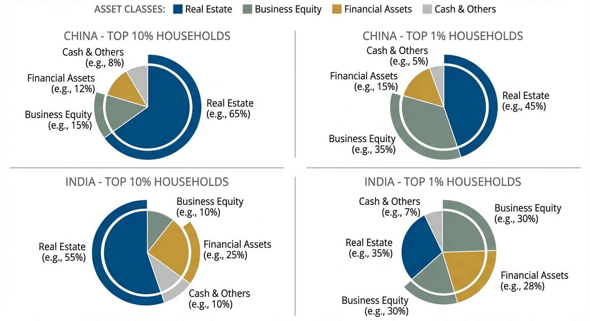
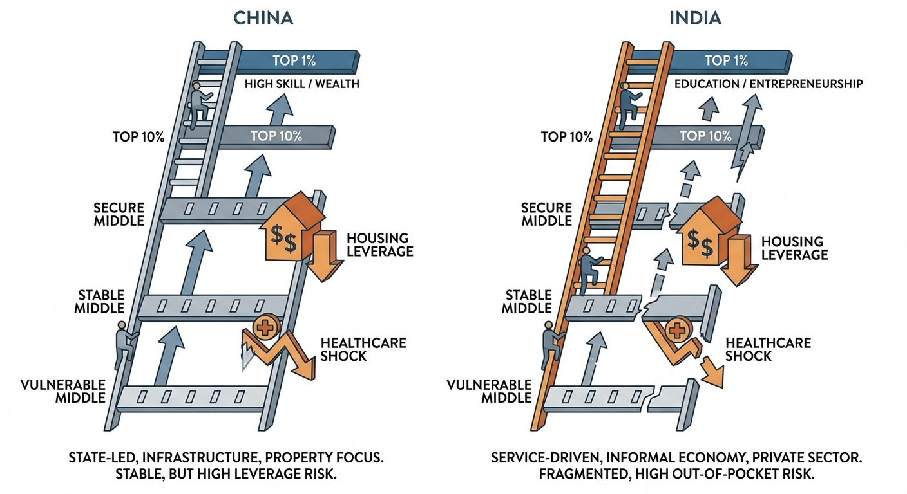
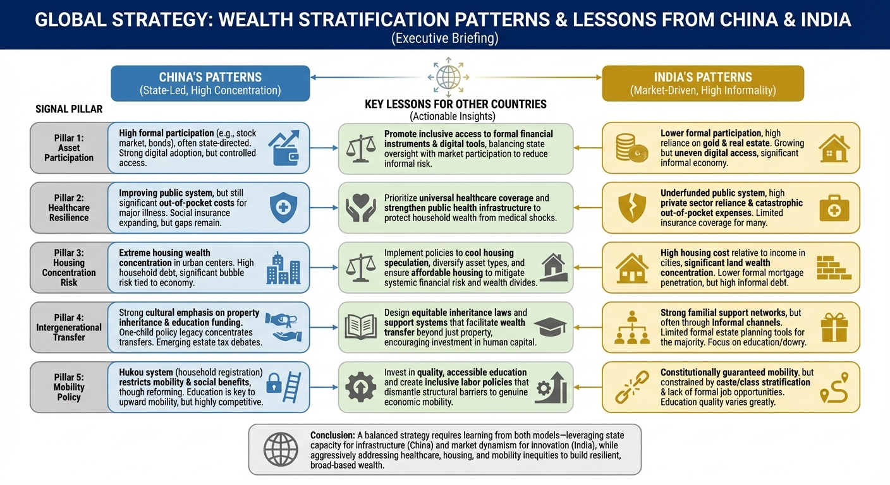

Inside Wealth in China and India: Top 10%, Top 1%, and the New Middle Class
In both countries, top-wealth groups are defined less by salary and more by ownership, liquidity quality, and institutional access.
If you ask ten people what “middle class” means in China or India, you will get ten different answers. Some will define it by salary. Some by apartment ownership. Some by school choices for children. Some by the ability to travel internationally without debt. A few will define it by financial assets, and almost nobody will start with net wealth. That gap is exactly why this conversation matters.
Income tells you what comes in this year. Wealth tells you what cushion you have if next year goes wrong, and what options your children will have when they are adults. In rapidly changing economies like China and India, where urbanization, technology, policy, education, and demographic shifts are all moving at once, the distinction between income and wealth is not academic. It is the difference between stability and fragility.
This post focuses on one practical question: what does it actually mean to be in the top 10% and top 1% of households by wealth in China and India? Not in an abstract moral sense. In lived terms. What incomes are typically associated with those households? What do their balance sheets look like? Which assets dominate? How do they invest? How do healthcare choices differ from the median household? What communities do they live in, and what lifestyle patterns are common? We also cover why “middle class” means different things in each country and why this matters to policymakers and businesses in other countries.
The short version is this. In both countries, top-wealth households are not just “higher earners.” They are balance-sheet households. They own appreciating assets early, maintain optionality through liquidity, and use institutions, schools, and healthcare systems differently from median households. Their wealth compounds because they participate in growth channels that are not equally accessible to everyone else.

Start With Definitions: Wealth Percentiles Are Not Income Percentiles
Before comparing China and India, we need clean definitions. A wealth percentile ranks households by net wealth, meaning total assets minus total liabilities. Assets include financial assets such as deposits, equities, mutual funds, pension balances, and business equity, plus non-financial assets such as housing and land. Liabilities include mortgages, business loans, personal loans, and other debt. Income is a flow. Wealth is a stock.
That distinction matters because two households with identical annual income can sit in completely different wealth deciles. One may have high EMIs, low savings, no equity exposure, and no family capital transfers. The other may have inherited land, own a mortgage-light home, hold business equity, and receive intergenerational transfers. Income can look similar in a tax return, while wealth outcomes diverge by decades.
Another key distinction is per-adult versus per-household measurement. Many inequality datasets report wealth thresholds per adult, while households make actual decisions jointly. In a two-adult household, per-adult thresholds need to be translated into practical household thresholds. That translation is not exact because household structures vary, but it is useful for interpretation.
Data quality is also uneven at the very top, especially in countries where private businesses, unlisted equity, and complex ownership structures are common. Most serious inequality research therefore combines surveys, administrative records, national accounts, and rich lists to better capture top tails. This is important when we discuss top 1% because small undercounts at the very top create large bias in estimated concentration.
Where the Cutoffs Sit: India Has Clear Published Thresholds; China Requires Banded Interpretation
For India, we now have unusually useful detail. The World Inequality Lab’s 2024 working paper on India reports wealth thresholds and average wealth for each broad group in 2022-23. The estimated top 10% wealth threshold is INR 21,98,344 per adult, and the top 1% wealth threshold is INR 81,60,022 per adult. In the same table, top 10% average wealth is roughly INR 87,70,132 per adult, and top 1% average wealth is about INR 5,41,41,525 per adult. The paper also estimates top 10% wealth share near 65% and top 1% wealth share at 40.1%.
If you convert those per-adult thresholds into practical two-adult household terms, the top 10% entry line is roughly around INR 44 lakh household net wealth, and the top 1% entry line is roughly around INR 1.63 crore household net wealth. Real families differ by dependents, inherited assets, and ownership structures, so treat this as an interpretive conversion, not an official cutoff. Still, it gives a realistic operating range for how “top 10” and “top 1” feels in Indian urban life.
For China, top-tail threshold reporting is less standardized in one place for the same period using an India-like table format. So the best approach is banded interpretation from multiple sources. WID-based comparisons show very high concentration in upper groups, and secondary summaries based on UBS global wealth cross-country comparisons have placed China’s top 1% entry threshold in the low-to-mid six-figure USD range in recent years. Treated conservatively, that suggests a practical top 1% wealth entry range that is materially above median Chinese household wealth and usually tied to at least one major urban property plus financial assets or business equity.
The important analytical point is not one exact integer cutoff. It is that in both countries the top 10% and top 1% are balance-sheet categories dominated by asset ownership, not salary alone. If you are modeling mobility, this means rising income is necessary but not sufficient. Asset conversion speed is the key driver.
Top 10% in India: Comfortable but Often Balance-Sheet Tight
In India, a top-10%-by-wealth household often looks wealthier on paper than it feels in monthly cash flow. This is because assets are frequently concentrated in one self-occupied home and family business equity, while liquid financial assets are thinner than expected. In metro regions, even relatively affluent households can look “asset rich, liquidity cautious” because tuition, healthcare, travel, parental support obligations, and housing upgrades absorb cash flow.
Typical household income profiles in this band are often upper-middle to high salaried professionals, dual-income white-collar families, senior managers, successful SME owners, and professionals with stable demand cycles such as specialist doctors, legal partners, technology leaders, or consulting principals. But what distinguishes this group from the broad middle class is less the salary headline and more the ownership map: at least one appreciating real asset, low-to-moderate leverage relative to income, and rising exposure to formal financial products.
Investment behavior in this segment has shifted over the last decade. Bank deposits remain central for liquidity and safety, but participation in mutual funds, SIPs, retirement products, and equities has widened. Gold still plays a cultural and balance-sheet role. Real estate remains a major anchor, especially for intergenerational signaling and collateral value, but younger top-10 households in larger cities are gradually increasing financial asset allocation due to digitized investing platforms and tax-aware planning.
Healthcare access in this segment is meaningfully better than median access, but still heterogeneous. Many families rely on employer insurance plus out-of-pocket spending for higher-quality private care. Access to trusted specialists in major cities is a strong differentiator. Preventive checkups, chronic disease monitoring, and elective procedures happen earlier in this group than in lower wealth segments, but coverage adequacy is still a recurring issue when severe illness hits.
Lifestyle markers in this group include better school optionality, higher private transport ownership, occasional international travel, and stronger neighborhood-level safety and amenities. But this group is not “financially unconstrained.” Job loss, business shocks, or prolonged illness can still destabilize trajectories if liquid reserves are shallow relative to fixed commitments.
Top 1% in India: Concentrated Capital, Not Just High Salary
The top 1% in India is structurally different from the top 10%, not merely a richer version of it. Based on the WIL estimates, top 1% households are far above entry cutoff in both average wealth and wealth share. This is where business ownership, promoter equity, concentrated financial portfolios, land banks, premium urban real estate, and intergenerational capital transfers become dominant.
Income profiles here are typically multi-stream. Salaries may exist but are often secondary to business income, dividends, capital gains, rent, partnership distributions, advisory retainers, or family office structures. Cash flow seasonality matters less because households in this group usually have multiple reservoirs of value and stronger access to credit at attractive terms.
Asset composition in this group generally includes high-value residential property, commercial real estate exposure, meaningful equity holdings, and private business ownership. The upper end adds global diversification via foreign assets, international funds, or global mobility planning. Tax planning sophistication is usually much higher than in the top 10% cohort.
Healthcare behavior also changes. The top 1% typically optimizes for speed, certainty, and provider quality, not just treatment affordability. This can include concierge-style health checks, rapid specialist access, preventive genomics and cardiometabolic monitoring, international second opinions, and cross-border elective treatment when relevant. Health choices become an active portfolio of risk management rather than episodic spending.
Community and lifestyle patterns reflect network effects. Schooling pathways are globalized earlier. Professional networks are denser and often interlinked with capital access. Housing choices prioritize both prestige and logistics: proximity to business hubs, airports, premium healthcare clusters, and top-tier schools. Consumption signals are visible, but the deeper differentiator is institutional proximity. This group can navigate legal, financial, educational, and healthcare systems through expert intermediaries quickly.
From a social-mobility perspective, this is why the top 1% matters disproportionately. Their advantage is not one variable. It is synchronized advantage across assets, institutions, and timing.

Top 10% in China: Property-Led Wealth With Urban Scale Effects
In China, top-10%-by-wealth households are strongly shaped by urban property economics and regional concentration. Housing and land-linked assets have historically carried much of household wealth, with meaningful variation across tier-1, tier-2, and lower-tier cities. Even after property market stress and policy shifts, property ownership remains central to household balance sheets for upper deciles.
Income patterns in this group include senior corporate roles, technology and advanced manufacturing professionals, successful service-sector operators, export-linked entrepreneurs, and managerial households benefiting from urban labor-market depth. But as in India, income is not the full story. Early property entry, family-assisted down payments, and business-linked asset appreciation often determine decile movement.
Top-10 households in China generally show stronger household savings behavior than many global peers, partly due to precautionary motives and institutional history. Financial assets are meaningful and growing, but housing still dominates for many. Wealth resilience therefore depends on local property dynamics, refinancing conditions, and how well households diversify beyond one concentrated asset class.
Healthcare access in this segment is substantially better than national median in terms of speed and specialist access, particularly in major cities. Upper-decile families are more likely to use premium private channels, employer-enhanced benefits, and higher-tier hospital pathways, even while relying on the broader public system for core coverage. Preventive behavior is stronger in large-city upper-decile cohorts than in lower-income rural areas, contributing to a practical health-access divide inside the same national system.
Lifestyle markers in China’s upper decile include strong education spending, property upgrades, domestic travel intensity, and in many cases selective international exposure. Yet financial stress can still occur when wealth is too concentrated in illiquid property and income is tied to cyclical sectors. So top 10% status does not always equal high liquidity. It often means high net worth with varied cash-flow flexibility.
Top 1% in China: Capital Density, Business Ownership, and Institutional Access
China’s top 1% is best understood as a capital-density category where ownership and control matter more than wage rank. Secondary summaries of UBS-based comparisons have suggested a top-1 entry line in the low-to-mid six-figure USD range in recent years, but practical positioning usually requires more than hitting an entry number once. Sustained top-1 status generally reflects multiple asset engines and the ability to withstand policy and market cycles.
Typical top-1 households in China are often tied to private enterprise leadership, senior executive compensation with equity-like upside, high-value real estate portfolios, or long-cycle family business accumulation. The top tail of this group includes substantial financial portfolio diversification, offshore structuring where permissible, and highly active wealth management relationships.
Investment behavior tends to be barbelled. One side remains anchored in domestic strategic assets, often property and operating businesses. The other side seeks diversification into listed securities, funds, cross-border exposures, and defensive allocation. The exact mix changes with regulation and macro conditions, but the common denominator is active portfolio construction rather than passive savings accumulation.
Healthcare access for this segment is usually high-agency and multi-channel. Households can optimize provider choice, booking speed, and second-opinion pathways with fewer constraints. Preventive diagnostics, annual executive screening, and disease-specific specialist networks are more common. As with top 1% cohorts globally, this creates a health horizon advantage: earlier detection, faster intervention, and less delay friction.
Community and lifestyle signals include residence in high-service districts, stronger education optionality, and access to networks that compound opportunity. Children’s education strategy, language exposure, and global credential pathways often begin early. The wealth effect is therefore not just consumption at the top. It is capability transfer across generations.
What “Middle Class” Means in India: More About Vulnerability Than Labels
India’s middle-class debate is unusually complex because definitions vary by institution and purpose. Some definitions use consumption baskets, some use income bands, and some use aspirational behavior such as schooling and durable ownership. This creates public confusion, especially when media headlines call very different groups “middle class.”
A practical way to think about India’s middle class is in three layers. First is the emerging middle, where households have moved beyond extreme vulnerability but remain exposed to shocks from illness, job loss, or inflation in essential services. Second is the stable middle, where income is regular, debt is manageable, and some financial assets are building, but long-term security is still developing. Third is the secure upper middle, where savings rates, insurance depth, and asset diversification begin to look structurally resilient.
Under this lens, many households that self-identify as middle class are actually balance-sheet fragile. They may have respectable monthly income and visible consumption signals, but low emergency buffers and high fixed commitments. This is why policy discussions focused only on income tax slabs miss the deeper issue. Household resilience depends on healthcare risk, education costs, housing leverage, and savings formalization.
For India, “middle class” increasingly signals transition rather than destination. It signals movement from income dependence to asset formation, from informal safety nets to formal risk protection, and from one-asset concentration toward diversified balance sheets. The biggest differentiator over the next decade will be whether households can convert wage gains into productive, compounding ownership.
What “Middle Class” Means in China: Security, Urban Status, and Service Access
In China, middle-class identity is strongly linked to urban status, home ownership, education pathways, and consumption quality. The middle class is often interpreted as households with reliable urban employment, access to decent schools and healthcare channels, and enough savings to maintain social mobility trajectories for children.
But even here, the middle class is not one block. There is a broad spectrum from serviceable stability to highly pressured urban households carrying significant housing concentration risk. In large cities, some households with high incomes still feel financially stretched due to property costs, education competition, and caregiving responsibilities for both children and aging parents.
That means China’s middle class signal is also about confidence in future optionality. Can the household handle health shocks without liquidating core assets? Can children access strong education pathways without over-leveraging family finances? Can retirement risk be managed without relying solely on one property asset? Households that can answer yes move toward secure middle status. Households that cannot remain vulnerable despite good incomes.
This framing helps explain why upper-decile and top-1 differences matter so much. They are not just richer segments. They are better insulated from time-risk. They can make long-horizon decisions without immediate tradeoffs in essential security.

Typical Income, Asset, and Investment Patterns Across the Four Groups
To make this concrete, it helps to compare four practical profiles: India top 10%, India top 1%, China top 10%, and China top 1%.
Income structure: Top 10% groups in both countries are still meaningfully labor-income dependent, though with higher saving capacity. Top 1% groups rely much more on ownership income, business income, and capital gains.
Asset concentration: Top 10% groups usually have concentrated exposure to one or two major assets, often housing plus retirement/financial products. Top 1% groups have broader asset stacks and stronger diversification pathways.
Liquidity quality: Top 10% groups can appear affluent with tight monthly flexibility. Top 1% groups generally maintain significantly higher liquidity optionality through cash equivalents, portfolios, and credit access.
Investment process: Top 10% groups often invest through standardized retail channels with gradually improving discipline. Top 1% groups use professional advisory layers, tax optimization, and strategic rebalancing with cross-asset thinking.
Risk management: In top 10% groups, insurance and contingency planning are improving but often incomplete. In top 1%, risk management is usually embedded in legal structures, insurance depth, governance, and family planning mechanisms.
Intergenerational strategy: Top 10% groups focus on education-led upward mobility. Top 1% groups focus on preserving and expanding capital through education, networks, ownership transfer structures, and institutional continuity.
This is why headline salary comparisons mislead. The real divergence begins when households cross from earning to owning, then from owning to managing risk professionally.
Healthcare Access: Wealth Is Also a Time Advantage
Healthcare access is one of the clearest channels where wealth translates into real-life outcomes. World Bank indicators show differences in out-of-pocket burden and service access across systems, while within-country wealth gradients shape the quality, speed, and continuity of care.
In both China and India, upper-wealth households enjoy practical advantages: faster specialist access, better diagnostics, lower delay between symptoms and treatment, and stronger ability to choose provider quality instead of defaulting to queue availability. These are not minor conveniences. They influence disease severity at treatment start, recovery quality, labor continuity, and long-term household wealth preservation.
Top-10 households may still experience high out-of-pocket exposure in major episodes, especially where insurance limits are narrow. Top-1 households, by contrast, are far more likely to absorb major health shocks without forced asset sales or long-term debt stress. In this sense, wealth status is partly a health shock absorber.
This pattern creates compounding effects. Households with better preventive care and faster intervention lose fewer high-productivity years, face less emergency borrowing, and can sustain long-term investment behavior. Households without this buffer are more likely to liquidate growth assets during crises, resetting mobility progress.
Community and Lifestyle: Networks Compound as Much as Capital
When people think about top-wealth lifestyles, they often focus on visible consumption: homes, cars, schools, travel. Those matter, but the strongest edge is usually network quality. Wealthy communities are not just expensive places to live. They are coordination systems with better information flows, stronger institutional links, and faster problem resolution.
For example, school networks can shape internship pathways, mentorship opportunities, and early career access. Neighborhood networks can influence business referrals, legal advisory quality, and healthcare recommendations. Professional communities can accelerate deal flow, capital access, and policy interpretation speed. These advantages are difficult to quantify but powerful over long horizons.
Top 10% households get partial access to these systems, especially in major cities. Top 1% households are often deeply embedded in them. That embedding increases opportunity density and reduces friction costs in decision-making.
This is also why wealth concentration can feel socially sticky. Even when income mobility improves, network-mediated opportunity remains uneven. Mobility policy that ignores institutional access risks overestimating how quickly societies can flatten inequality outcomes.
What This Signals for Other Countries
The China-India comparison is not just about two countries. It previews dynamics many countries are now facing as asset prices, housing costs, healthcare inflation, and education competition reshape class structures.
There are five major signals.
Signal 1: Wealth metrics will increasingly dominate class debates. Income-only narratives are losing explanatory power. Policymakers, employers, and media will need better balance-sheet indicators to assess real household resilience.
Signal 2: Property-heavy wealth models create fragility when diversification lags. Households can look affluent while remaining exposed to one asset cycle. Countries with high housing concentration and low financial diversification should expect stronger volatility in perceived middle-class security.
Signal 3: Health systems are now class amplifiers unless protection broadens. Rising medical costs and uneven access make healthcare quality a wealth-preservation mechanism. Without broad risk pooling and preventive access, wealth gaps widen through health shocks.
Signal 4: Intergenerational transmission is accelerating. Education, networks, and capital transfer structures increasingly determine long-term rank persistence. Countries that ignore this will see slower mobility even with strong GDP growth.
Signal 5: Asset participation policy matters as much as wage policy. Wage growth helps, but durable mobility requires earlier entry into productive asset ownership. Financial inclusion that stops at payments infrastructure is not enough.
For business leaders, this means product strategy should map to wealth behavior, not only income segments. For policymakers, it means social stability and mobility targets require household balance-sheet design, not just income support.

A Practical Framework: How to Read Top 10% and Top 1% Without Oversimplifying
If you are building analysis, policy, or products around class and wealth, use a four-layer framework instead of single-threshold storytelling.
Layer 1: Entry threshold. What net wealth level gets a household into top 10% or top 1% in your chosen dataset? For India, we now have explicit per-adult thresholds from WIL for 2022-23. For China, use a transparent threshold band with source notes and update intervals.
Layer 2: Average within group. Entry tells you who gets in. Group average tells you how far the center of gravity sits above entry. This gap is often large, especially in top 1%, and explains why “just entered top 1%” and “deep top 1%” are different worlds.
Layer 3: Asset composition. Is wealth mostly housing, business equity, financial assets, or mixed? Concentration risk and liquidity quality depend on this composition, not only total value.
Layer 4: Access quality. What does wealth buy in healthcare, education, legal support, and networked opportunity? This determines how quickly households can recover from shocks and compound across generations.
This framework prevents three common errors: treating salary as wealth, assuming all top 10% households are financially secure, and flattening top 1% into a single homogeneous group.
Scenario Lens: One Shock, Four Different Outcomes
Imagine one scenario: a major health event plus six months of income disruption. Now apply it across four groups.
India top 10% may need to pull from deposits, pause SIPs, or liquidate non-core assets depending on insurance adequacy. Education and housing commitments may create stress even with decent nominal wealth.
India top 1% is more likely to absorb costs without strategic asset liquidation. Income disruption is cushioned by multiple asset channels. Recovery period may involve portfolio rebalancing, not financial reset.
China top 10% outcomes vary by liquidity and property concentration. Households with high property share and lower liquid buffers may face financing stress despite high net-worth labels.
China top 1% generally has better optionality through asset diversity and access channels. Financial damage is more likely to be managed as allocation friction than household-level instability.
This simple stress test reveals why percentile labels alone are not enough. Composition and access drive outcomes.
Policy and Business Implications: What to Build Next
For governments, three priorities stand out. First, improve household wealth statistics with consistent top-tail methods and per-household interpretability. Second, strengthen risk protection in health and retirement to reduce forced asset liquidation during shocks. Third, design pathways for broader productive asset participation, especially for stable-middle households trying to cross into secure-middle status.
For financial institutions, segmentation by income bracket is now insufficient. Products should be designed around stage-of-balance-sheet maturity: emergency resilience, first-asset optimization, diversification transition, and intergenerational transfer readiness. The largest unmet demand in both markets sits in households that look affluent by salary but remain under-protected by wealth structure.
For healthcare systems and providers, upper-decile demand will continue moving toward integrated preventive programs and faster specialist pathways. But the larger social challenge is reducing the diagnosis and treatment delay gap for middle and lower-income households. That gap is now a major driver of wealth inequality persistence.
For education ecosystems, credential inflation and access inequality will intensify as top-wealth households continue to convert capital into educational advantage. Policies that improve quality consistency across schools and geographies become economic mobility policy, not just social policy.
For international observers, China and India are not mirror images. They are two different routes through mass-market modernization with unequal asset distribution outcomes. The overlap is this: in both systems, wealth now shapes life options more strongly than income alone.
Methodology Notes: What the Data Captures Well and Where You Should Be Careful
Any serious comparison between China and India needs a clear note on methodology limits. Top-tail wealth estimation is hard everywhere because very wealthy households are often underrepresented in standard surveys, hold complex ownership structures, and can move assets across legal entities. That is why mixed-method approaches, which combine surveys with administrative data and rich lists, are now standard in inequality research.
For India, the WIL framework is unusually useful because it explicitly documents assumptions and publishes threshold and average wealth estimates by group. That gives analysts a concrete base for scenario design and policy interpretation. It does not mean every number is exact in a forensic sense, but it does mean the framework is transparent enough to update and stress-test over time.
For China, available public reporting often provides robust concentration trends and asset-composition insight, but threshold reporting can vary by source and year. This is why banded interpretation is more responsible than false precision. A practical model can still be data-backed if it states its assumptions clearly, links to primary indicator families, and avoids pretending uncertain inputs are exact.
A second caveat is currency and valuation effects. Converting wealth thresholds across currencies can distort interpretation when exchange rates move or when local asset markets reprice quickly. For country-level class analysis, local-currency framing and per-adult versus per-household translation are usually more meaningful than one global USD ranking.
A third caveat is urban-rural composition. In both countries, wealth and income structures differ materially by geography. A top-decile household in a tier-1 city may have a very different income-wealth mix than a top-decile household in a smaller city or semi-urban district. Analysts should avoid applying one metro-centric profile to an entire national percentile group.
Mobility Playbooks: How Households Move From Middle to Top 10%, and Top 10% to Top 1%
Because this topic is practical, it helps to translate percentile economics into mobility playbooks. In both China and India, movement from the stable middle into top 10% usually depends on four levers working together: income growth, disciplined savings rate, early ownership of appreciating assets, and controlled leverage. Missing any one of these tends to slow the transition sharply.
In India, households that move fastest into top 10% often combine dual-income professional growth with systematic financial investing and one strategically chosen real-asset anchor. The key inflection point is when annual savings are no longer consumed by emergencies and begin funding compounding assets. Insurance adequacy and emergency liquidity are the hidden accelerators, because they prevent forced liquidation during shocks.
In China, top-10 mobility has historically been amplified by urban property participation, but forward-looking mobility is increasingly linked to diversification quality. As property cycle risk becomes more visible, households that pair property exposure with resilient financial allocation are likely to protect decile status better than households concentrated in one illiquid asset class.
The jump from top 10% to top 1% is a different game in both countries. It usually requires ownership of scalable cash-flow engines such as business equity, concentrated equity upside, or multi-asset capital structures. Salary progression alone can improve lifestyle substantially but rarely drives durable top-1 positioning without ownership leverage.
Intergenerational strategy then becomes decisive. Top-1 households are not just richer in year-one metrics. They are better at preserving institutional continuity over decades through governance, tax planning, succession structures, and education-network pipelines. If other countries want broader mobility, they need to build policies that help more households access ownership channels earlier rather than relying solely on wage-led progression.
Bottom Line
Being top 10% or top 1% by wealth in China and India is not simply a bigger paycheck. It is a different operating system. The differences show up in asset ownership, liquidity, healthcare speed, education strategy, network density, and shock resilience.
In India, the latest WIL estimates provide concrete entry thresholds and show how concentrated wealth is at the top. In China, the picture also points to strong upper-tail concentration, with practical top-tier status tied to asset ownership and institutional access more than salary rank. In both countries, middle class is increasingly a transition state whose durability depends on whether households can convert income into diversified, resilient wealth.
For other countries, the signal is clear. If policy and market design focus only on incomes, they will miss where long-term inequality now lives. The decisive battleground is household balance-sheet quality: what people own, how concentrated it is, how liquid it is, and whether systems allow broad participation in compounding assets.
The next decade’s social and economic stability will be shaped by one practical question: can large numbers of households move from earning to owning without taking risks that can wipe out progress in one shock cycle?
Key Takeaways
- Wealth percentiles and income percentiles are different systems; policy and media often conflate them.
- India has explicit 2022-23 wealth thresholds in WIL data: top 10% at INR 21,98,344 per adult and top 1% at INR 81,60,022 per adult.
- In both China and India, top-wealth groups are defined by ownership and asset compounding, not salaries alone.
- Top 10% households often remain liquidity-sensitive if wealth is concentrated in property and fixed commitments are high.
- Top 1% households benefit from multi-asset income, institutional access, and superior shock absorption.
- Healthcare access is a major wealth amplifier through earlier diagnosis, faster treatment, and lower forced asset sales.
- “Middle class” in both countries signals transition, and its durability depends on conversion of income into resilient assets.
- Other countries should treat household balance-sheet quality as a core mobility and stability policy metric.
Sources
- World Inequality Lab Working Paper 2024/09: Income and Wealth Inequality in India, 1922-2023
- World Inequality Database: India
- World Inequality Database: China
- World Bank: Poverty and Shared Prosperity Overview
- World Bank Indicator: Out-of-pocket expenditure (% of current health expenditure)
- World Bank Indicator: UHC service coverage index
- World Bank Indicator: GDP per capita, PPP (current international $)
- Pew Research Center: A Global Middle Class Is More Promise than Reality
- UBS Global Wealth Report